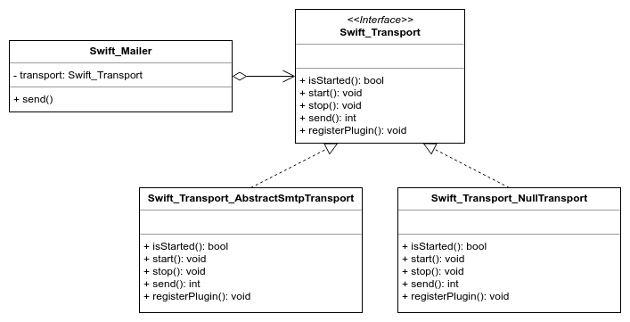

Le design pattern Strategy peut être mis en place lorsque plusieurs algorithmes peuvent être utilisés pour effectuer une même tâche.
Il permet de masquer et d’encapsuler ces algorithmes et évite l’utilisation de conditions afin de déterminer celui qui doit être utilisé.
Ce design pattern favorise la composition plutôt que l'héritage.
Dans cette exemple, nous allons construire des voitures et permettre aux développeurs de choisir le moteur qui sera utilisé.
Pour cela, nous allons commencer par créer une interface comprenant les méthodes communes à l'ensemble des moteurs :
interface Moteur
{
public function Demarrer(): string;
public function Recharger(): string;
}Nous allons maintenant créer 2 types de moteurs (essence / éléctrique) :
class MoteurEssence implements Moteur
{
public function Demarrer(): string
{
return "Vroum vroum";
}
public function Recharger(): string
{
return "Glou glou glou";
}
}class MoteurElectrique implements Moteur
{
public function Demarrer(): string
{
return "*silence*";
}
public function Recharger(): string
{
return "Gzzzt";
}
}Nous allons ensuite créer une class Voiture qui utilisera l'un des deux moteurs en fonction :
class Voiture
{
/** @var Moteur */
private $moteur;
/** @var int */
private $energie;
public function __construct(bool $ecologiste = false)
{
$this->energie = 0;
if ($ecologiste) {
$this->moteur = new MoteurElectrique();
} else {
$this->moteur = new MoteurEssence();
}
}
public function avancer()
{
if ($this->energie == 0) {
echo $this->moteur->Recharger() . "
";
}
echo $this->moteur->Demarrer() . "
";
}
}Enfin, nous allons utiliser ces différentes classes pour créer deux voitures :
echo "Contruction d'une Renault Zoe
";
$zoe = new Voiture(true);
$zoe->avancer();
echo "Contruction d'une Ford Mustang
";
$mustang = new Voiture();
$mustang->avancer();Le pattern Strategy est mis en place dans le composant gérant la sécurité via le système de Voters.
Lorsque vous faites appel à la méthode isGranted() dans votre application Symfony, un ensemble de méthodes seront appelées afin de déterminer si oui ou non, un utilisateur aura le droit d'effectuer une certaine action.
Vous avez la possibilité d'ajouter vos propres Voters en créant une classe qui implémentera l'interface VoterInterface :
interface VoterInterface
{
const ACCESS_GRANTED = 1;
const ACCESS_ABSTAIN = 0;
const ACCESS_DENIED = -1;
public function vote(TokenInterface $token, $subject, array $attributes);
}Le système de Voters de Symfony peut être représenté avec le diagramme de classe suivant :
Le bundle SwiftMailer utilise également le design pattern Strategy afin de permettre de définir dynamiquement le moyen de transport à utiliser (SMTP, Mail, Null...).
Lorsque vous utilisez ce service pour envoyer un mail, vous devez en effet définir dans son constructeur le transport à utiliser via un objet passé en paramètre. Cet objet doit implémenter l'interface Swift_Transport :
interface Swift_Transport
{
public function isStarted();
public function start();
public function stop();
public function ping();
public function send(Swift_Mime_SimpleMessage $message, &$failedRecipients = null);
public function registerPlugin(Swift_Events_EventListener $plugin);
}La classe Mailer utilise ensuite cette interface en paramètre de son constructeur :
public function __construct(Swift_Transport $transport)
{
$this->_transport = $transport;
}L'organisation de ces différentes classes et interfaces peut être représenté de la façon suivante :
L'ORM Doctrine utilise également ce design pattern dans une situation assez classique en développement informatique : La connexion à la base de données.
Vous pouvez observer le code source de la classe Driver sur le repository Github de Doctrine et vous constaterez qu'il s'agit là-encore d'une implémentation du design pattern Strategy.
Si vous regardez les autres fichiers du projet Doctrine, vous pourrez réalisez un diagramme UML similaire à ceux montrés dans les exemples précédents.